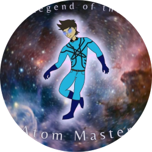

|  |
Welcome to the Legend of the Atom MasterThis is the full legend of the Atom Master, Stephen Cephas, from the death of his predecessor, Plathantos, to the day he left our known universe. Stephen Cephas is an astronaut from NASA in a new age program to find alien life in the galaxy. In the year 2032, NASA has developed the technology to travel at light speed and decides to use Stephen as the first captian to ever fly in life speed and, hopefully, find alien life to communicate with. Only, he gets much more than he bargained for! More information on my WorldAnvil site and on my Atom Master Instagram! |
Learn all about the different characters of the universe here.
Get in contact with me here to talk more about my universe, characters, and story!
| 2012 | Created the character Atom Master. |
| 2015 | Changed powerset to be control over atoms (protons, neutrons, and electrons). |
| 2015 | Changed appearance |
| 2016 | Started storyline (an older version of his current story) |
| 2016 | Made God (known in universe as "The Almighty one") the one to give him his powers |
| 2019 | Changed appearance again (current suit) |